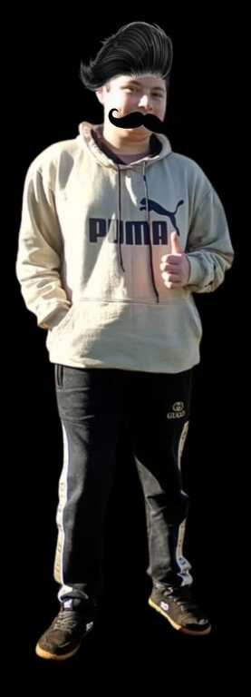
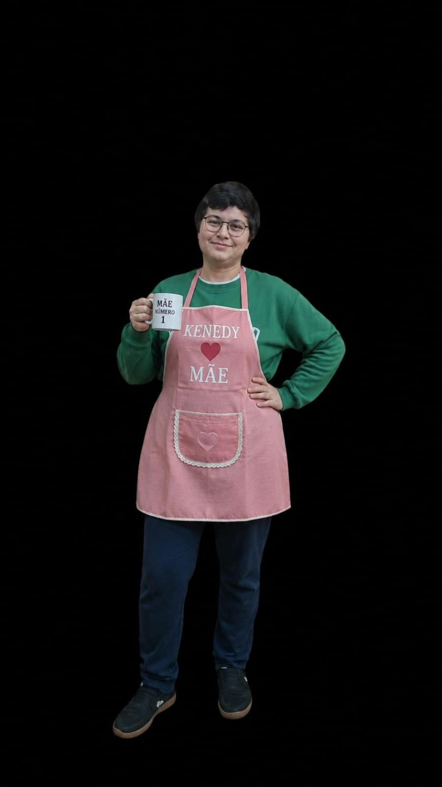
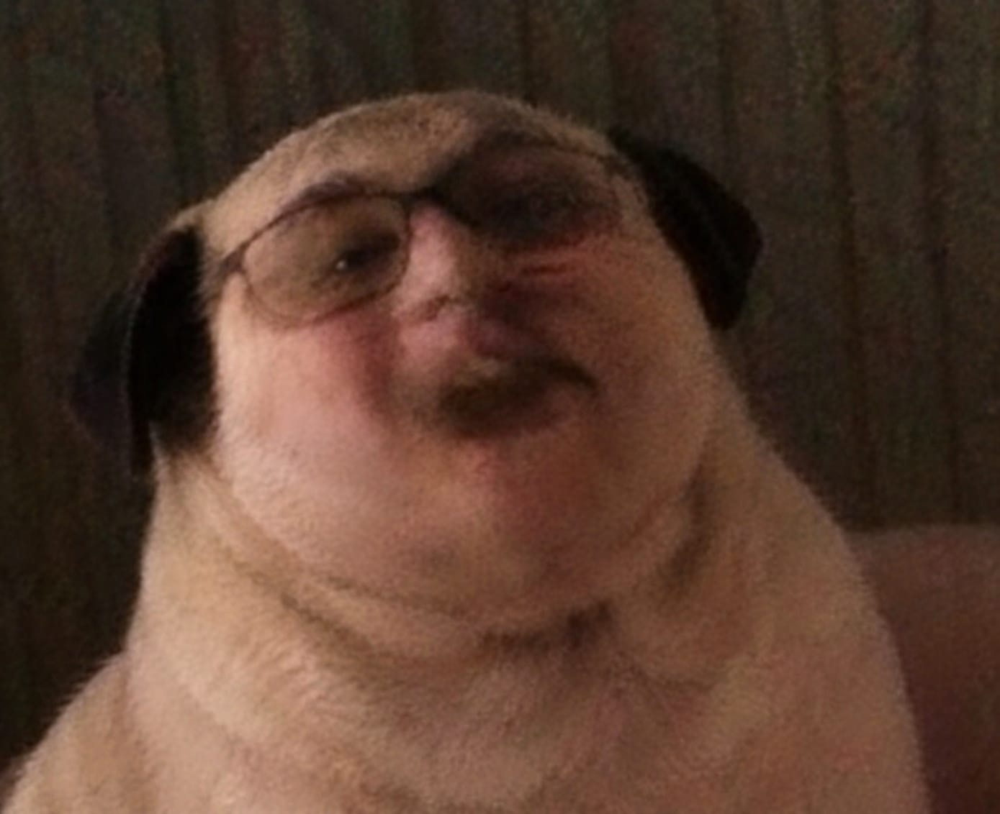

UNIDADE K-001
Apelido: Kenedy Avô
● STATUS: ATIVO, INOFENSIVO, potencialmente sabe de alguma coisa
VER REGISTRODIVISÃO INTERNA • ACESSO RESTRITO
Programa experimental responsável pela criação, observação e manutenção das unidades Kenedy.
Algumas informações presentes neste sistema foram classificadas pela Kenedy Corporation.
REGISTRO DE UNIDADES
Apelido: Kenedy Avô
● STATUS: ATIVO, INOFENSIVO, potencialmente sabe de alguma coisa
VER REGISTRO
Apelido: Kenedy Pai
● STATUS: ATIVO, INOFENSIVO
VER REGISTRO
Apelido: Kenedy Mãe
● STATUS: ATIVO, INOFENSIVO
VER REGISTROApelido: Kenedy Cientista
● STATUS: ESPÉCIE CORPORATIVA E CONSCIENTE
VER REGISTRO
Apelido: Kenedy Cachorro
● STATUS: ATIVO, INOFENSIVO, VISUALMENTE PERTURBADOR
VER REGISTROApelido: Kenedy Secretária
● STATUS: ATIVO, INOFENSIVO
VER REGISTROARQUIVO RECUPERADO DE UMA INVASÃO DESCONHECIDA
O projeto K-2708, pelo responsável Epstein trouxe resultados preocupantes em nossos testes: seu carisma foi classificado como 0 por ser o mais inútil e normal do laboratório; sua aparência foi classificada como comum; sua inteligência foi classificada como 5, um nível médio pelo menos
Entretanto, foram observadas diferenças inesperadas no comportamento da unidade durante um teste de resistência e força: K-2708 não resistiu bem ao teste de resistência, no momento de aplicar a dose de R-17 e reagiu de forma brutal, atacando os vidros e rachando parte do vidro. Receio que deveríamos estudar a natureza desta entidade e melhorar a resistência de nossos vidros
█████████████████████████████████████████
A Entidade K-2708 foi removida do programa em circunstâncias ainda não registradas oficialmente.
EXISTEM MAIS UNIDADES DO QUE O REGISTRO OFICIAL INDICA.
Última atualização: 27/08/20██